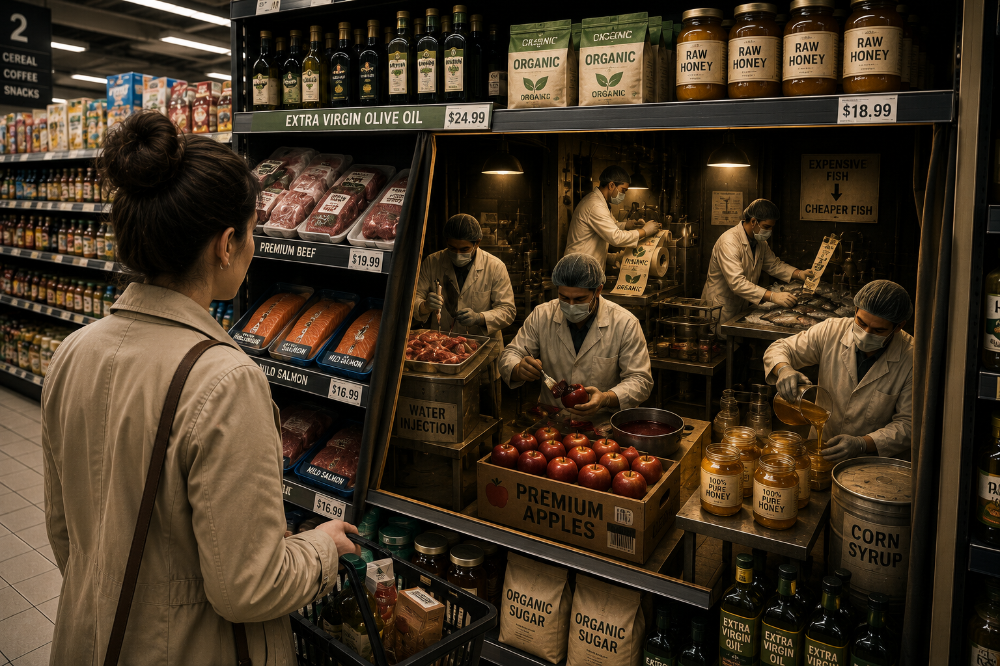
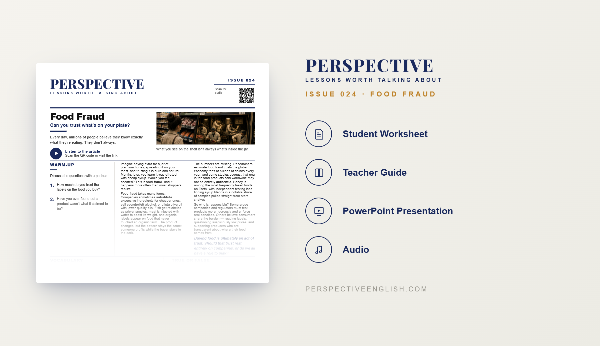

ISSUE 024
Food Fraud
Can you trust what's on your plate?
A ready-to-teach English lesson exploring how food can be diluted, substituted, relabeled, or falsely advertised, and why consumers may never know what they are really buying.
Collection 04 includes Issues 021–025.

LESSON PREVIEW

ABOUT THIS LESSON
Consumers usually trust that the food they buy is exactly what the label claims. However, some products are diluted, substituted, relabeled, or falsely advertised to increase profits.
This magazine-style English lesson explores food fraud through examples such as honey mixed with syrup, cheaper fish sold as premium species, diluted olive oil, fake organic labels, counterfeit alcohol, and water injected into meat.
Students read an original article, learn useful vocabulary, and take part in discussion, critical-thinking, speaking, and writing activities about consumer trust, food safety, company responsibility, regulation, labeling, and how people can make more informed choices.
FROM THE ARTICLE
WHAT'S INCLUDED
- Magazine-style student worksheet
- Original article and audio recording
- Vocabulary and reading activities
- Discussion and critical-thinking tasks
- Speaking challenge and writing prompt
- Teacher guide and complete answer key
- Classroom presentation
GET THE COMPLETE LESSON
Ready to teach Food Fraud?
Purchase the complete lesson for instant classroom use.
Secure checkout and instant digital delivery through Payhip.
Collection 04 includes Issues 021–025.